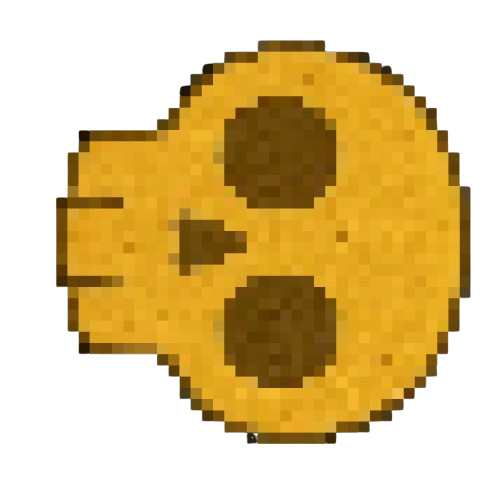
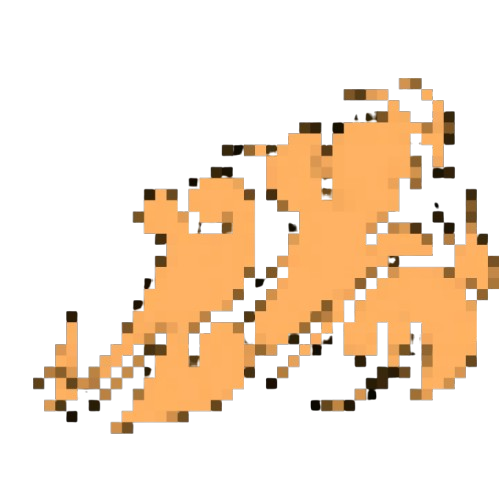
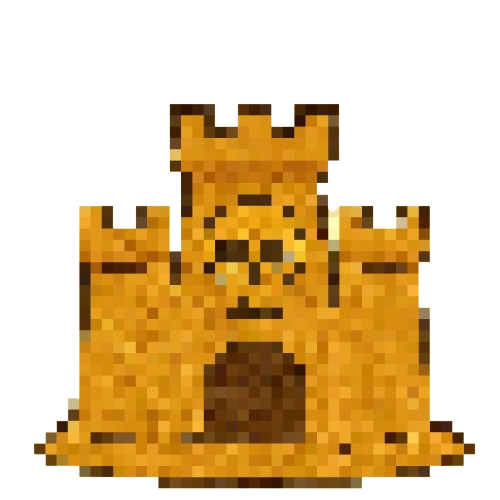
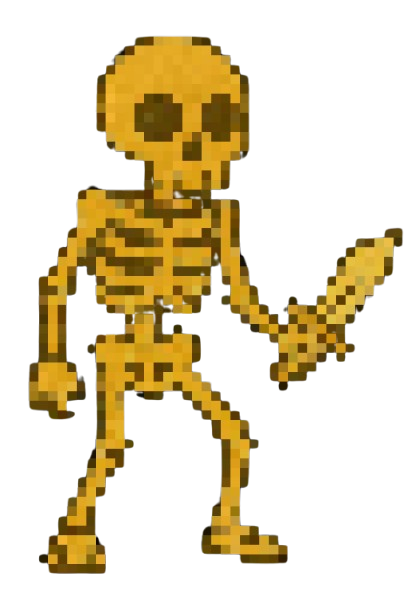

Attacken:
Hauptattacke: Sandkombi

Wenn er in der Luft ist, schießt er einen Sandschädel. Am Boden erzeugt er eine Sandwelle in beide Richtungen
 
Spezialattacke: Sandburg

Platziert eine Sandburg, wenn er am Boden ist und spawnt Dünenskelette bei ihm über Zeit
 
Mega-Spezialattacke: Mega-Sandburg

Platziert eine Sandburg, wenn er am Boden ist und spawnt Dünenskelette beim Gegner über Zeit
Kristallattacke: Skelettwächter
Spawnt ein Skelett beim Gegner, das nicht lange lebt